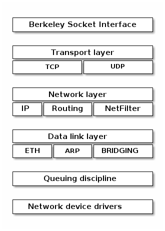
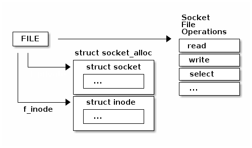
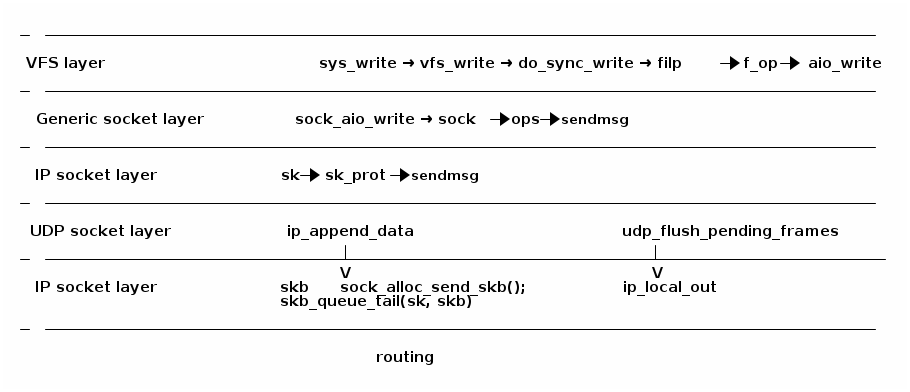
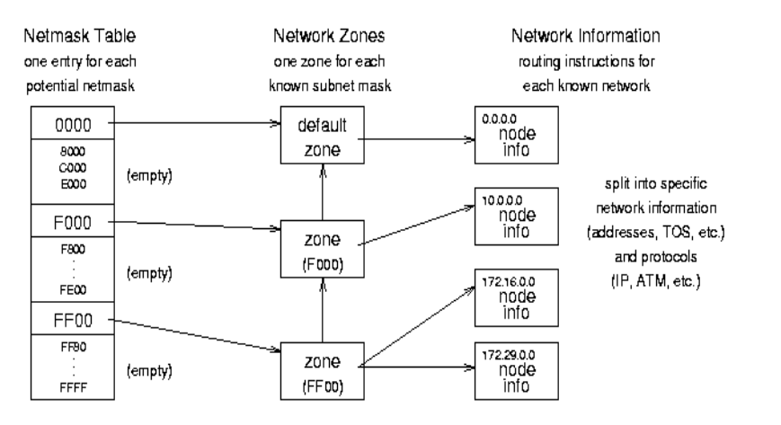
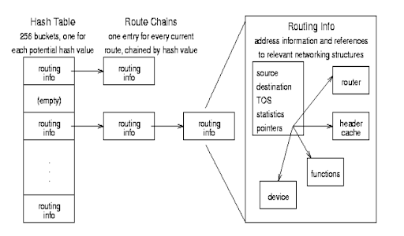
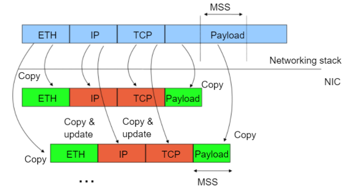

网络管理
- 套接字实现
- 路由实现
- 网络设备接口
- 硬件和软件加速技术
网络管理概述
Sockets 实现概述
Sockets 系列和协议

示例：UDP 发送
char c;
struct sockaddr_in addr;
int s;
s = socket(AF_INET, SOCK_DGRAM, 0);
connect(s, (struct sockaddr*)&addr, sizeof(addr));
write(s, &c, 1);
close(s);
示例：UDP 发送
网络处理阶段
- 中断处理程序——设备驱动程序从 RX 环获取数据，创建网络数据包，并将其放到网络栈队列等待处理
- NET_SOFTIRQ——数据包通过网络栈层，并进行处理：解封装以太网帧，检查 IP 数据包并进行路由，如果是本地数据包，则解封装协议数据包（例如 TCP）并将其放到套接字里的队列
- 进程上下文——应用程序从套接字里的队列获取数据或将数据推送到套接字里的队列
数据包路由

路由表
tavi@desktop-tavi:~/src/linux$ ip route list table main
default via 172.30.240.1 dev eth0
172.30.240.0/20 dev eth0 proto kernel scope link src 172.30.249.241
tavi@desktop-tavi:~/src/linux$ ip route list table local
broadcast 127.0.0.0 dev lo proto kernel scope link src 127.0.0.1
local 127.0.0.0/8 dev lo proto kernel scope host src 127.0.0.1
local 127.0.0.1 dev lo proto kernel scope host src 127.0.0.1
broadcast 127.255.255.255 dev lo proto kernel scope link src 127.0.0.1
broadcast 172.30.240.0 dev eth0 proto kernel scope link src 172.30.249.241
local 172.30.249.241 dev eth0 proto kernel scope host src 172.30.249.241
broadcast 172.30.255.255 dev eth0 proto kernel scope link src 172.30.249.241
tavi@desktop-tavi:~/src/linux$ ip rule list
0: from all lookup local
32766: from all lookup main
32767: from all lookup default
路由策略数据库
- “常规”路由仅使用目标地址进行路由
- 为了增加灵活性，系统使用了“路由策略数据库”，其可以根据其他字段（如源地址、协议类型、传输端口等）进行不同的路由选择
- 这被编码为一系列规则，根据优先级进行评估（优先级 0 最高）
- 每个规则都有一个选择器（用于匹配数据包）和一个动作（如果数据包匹配，则采取什么动作）
- 选择器：源地址、目标地址、服务类型（TOS）、输入接口、输出接口等
- 动作：查找（lookup）/单播（unicast）——使用给定的路由表，黑洞（blackhole）——丢弃数据包，不可达（unreachable）——发送 ICMP 不可达消息并丢弃数据包等。
路由表处理
- 本地地址的特殊表 -> 根据地址族、类型、端口将数据包路由到套接字
- 从最具体的路由开始检查每个路由条目（例如，192.168.0.0/24 在 192.168.0.0/16 之前）
- 如果数据包目标地址与子网掩码进行逻辑 OR 运算后等于子网地址，则表示路由匹配
- 一旦路由匹配，将检索以下信息：接口、链路层下一跳地址、网络下一跳地址
转发信息数据库（在 3.6 版本移除）

转发信息数据库（在 3.6 版本移除）

路由缓存（在 3.6 版本移除）

FIB TRIE

Compressed Trie

Netfilter
- 实现数据包过滤和 NAT 的框架
- 它在数据包流中的关键位置插入钩子（hook）：
- NF_IP_PRE_ROUTING
- NF_IP_LOCAL_IN
- NF_IP_FORWARD
- NF_IP_LOCAL_OUT
- NF_IP_POST_ROUTING
- NF_IP_NUMHOOKS
网络数据包/skb

结构 sk_buff
struct sk_buff {
struct sk_buff *next;
struct sk_buff *prev;
struct sock *sk;
ktime_t tstamp;
struct net_device *dev;
char cb[48];
unsigned int len,
data_len;
__u16 mac_len,
hdr_len;
void (*destructor)(struct sk_buff *skb);
sk_buff_data_t transport_header;
sk_buff_data_t network_header;
sk_buff_data_t mac_header;
sk_buff_data_t tail;
sk_buff_data_t end;
unsigned char *head,
*data;
unsigned int truesize;
atomic_t users;
skb APIs
/* 预留头部空间 */
void skb_reserve(struct sk_buff *skb, int len);
/* 在尾部添加数据 */
unsigned char *skb_put(struct sk_buff *skb, unsigned int len);
/* 在顶部添加数据 */
unsigned char *skb_push(struct sk_buff *skb, unsigned int len);
/* 丢弃顶部的数据 */
unsigned char *skb_pull(struct sk_buff *skb, unsigned int len);
/* 丢弃尾部的数据 */
unsigned char *skb_trim(struct sk_buff *skb, unsigned int len);
unsigned char *skb_transport_header(const struct sk_buff *skb);
void skb_reset_transport_header(struct sk_buff *skb);
void skb_set_transport_header(struct sk_buff *skb, const int offset);
unsigned char *skb_network_header(const struct sk_buff *skb);
void skb_reset_network_header(struct sk_buff *skb);
void skb_set_network_header(struct sk_buff *skb, const int offset);
unsigned char *skb_mac_header(const struct sk_buff *skb);
int skb_mac_header_was_set(const struct sk_buff *skb);
void skb_reset_mac_header(struct sk_buff *skb);
void skb_set_mac_header(struct sk_buff *skb, const int offset);
skb 数据管理

网络设备接口

高级特性
- Scatter-Gather（散列-聚集）
- 校验和外包：以太网、IP、UDP、TCP
- 自适应中断处理（聚合、自适应）
TCP 卸载
- 完全外包——在硬件中实现 TCP/IP 协议栈
- 问题：
- 连接数量的扩展
- 安全性
- 一致性
性能观察
- 性能与要处理的数据包数量成正比
- 例如：如果一个端点可以每秒处理 60K 个数据包
- 1538 MSS -> 738Mbps
- 2038 MSS -> 978Mbps
- 9038 MSS -> 4.3Gbps
- 20738 MSS -> 9.9Gbps
无状态外包
- 网络堆栈处理大数据包
- 发送路径：硬件将大数据包分割为较小的数据包（TCP 分段外包）
- 接收路径：硬件将小数据包聚合成较大的数据包（大体量接收外包——简称 LRO）
TCP 分段外包
大体量接收外包